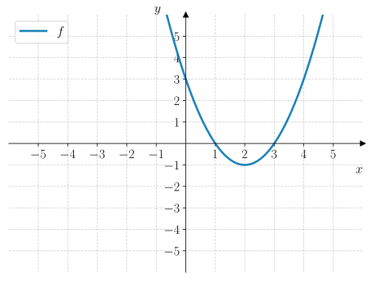
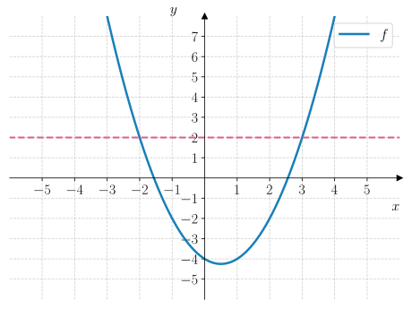

17. Andregradsulikheter#
Kunne beskrive mengder som består av flere intervaller.
Kunne tolke og tegne fortegnslinjer for andregradsfunksjoner.
Kunne løse andregradsulikheter grafisk og algebraisk.
Andregradsulikheter er ulikheter der vi lurer på når en andregradsfunksjon er større enn eller mindre enn null. Som når vi jobbet med lineære ulikheter, så hadde vi to strategier vi kunne bruke for å løse ulikhetene:
Grafisk
Algebraisk
Ved regning
Med CAS
Grafisk løsning#
Å løse en andregradsulikhet grafisk er ganske likt det vi gjorde med lineære ulikheter. Vi tegner grafen til funksjonen og så leser vi av hvor grafen oppfyller ulikheten.
La oss se på et eksempel:
Eksempel 1#
Løs ulikheten
Vi tegner grafen til \(f(x) = x^2 - 4x + 3\) og ser hvor \(y\)-koordinaten til grafen er mindre enn null:
{kind=link}

Fra grafen til \(f\) ser vi at \(f(x) < 0\) når
La oss se på et eksempel til der vi trenger en ny måte å beskrive løsningen på:
Eksempel 2#
Løs ulikheten
Vi tegner grafen til \(f(x) = x^2 - x - 4\) og ser hvor \(y\)-koordinaten til grafen er større enn eller lik \(y = 2\):
{kind=link}

Fra grafen til \(f\) ser vi at \(f(x) \geq 2\) når \(x \leq -2\) eller når \(x \geq 3\). Løsningen er derfor satt sammen av to intervaller. Det ene intervallet er \(\langle \gets, -2]\) og det andre er \([3, \to \rangle\). For å sette sammen disse to plasserer vi symbolet \(\cup\) mellom dem:
Vi leser det som at \(x\) er enten i det første intervallet, eller i det andre.
Underveisoppgave 1#
Grafen til en andregradsfunksjon \(f(x) = x^2 - 2x - 8\) er vist i figuren til høyre.
Bruk grafen til å løse ulikheten
Vi ser fra grafen at \(f(x) \geq -2\) når \(x \leq -2\) eller når \(x \geq 4\). Løsningen er derfor
Algebraisk løsning#
Å løse en andregradsulikhet algebraisk skiller seg en del fra hvordan vi løste lineære ulikheter. Her får vi ikke isolert \(x\) på samme måte som vi kunne gjøre med lineære ulikheter. I stedet må vi bruke en annen strategi. Strategien kan oppsummeres som:
Flytt alle ledd over på én side av ulikheten slik at høyre side blir null.
Skriv uttrykket på venstre side på nullpunktsform.
Tegn en fortegnslinje for andregradsfunksjonen på venstre side og les av løsningen som oppfyller ulikheten.
La oss først se på hvordan vi leser og tegner et fortegnsskjema.
Fortegnslinjer#
En fortegnslinje er en linje som viser fortegnet til en funksjon på et intervall. Vi bruker heltrukne og stiplede linjer for å skille mellom fortegnene:
\(=\) Positivt fortegn
\(=\) Negativt fortegn
Vi markerer med \(0\) ved nullpunktene \(x_1\) og \(x_2\) til funksjonen.

La oss se på et eksempel:
Eksempel 3#
Nedenfor vises fortegnslinja til en andregradsfunksjon \(f\) som har nullpunkter \(x = -2\) og \(x = 3\).
Bruk fortegnslinja til å løse ulikheten
Siden vi skal bestemme når \(f(x) < 0\), så må vi se hvor fortegnslinja er stiplet. Fra fortegnslinja ser vi at \(f(x) < 0\) når \(x < -2\) eller når \(x > 3\). Løsningen er derfor
Denne løsningen kan vi også skrive som
som sier at vi tar alle tallene på tallinja, bortsett fra tallene i intervallet \([-2, 3]\).
Underveisoppgave 2#
Nedenfor vises fortegnslinja til en andregradsfunksjon \(f\).
Bruk fortegnslinja til å løse ulikheten \(f(x) \geq 0\).
For å løse ulikheten \(f(x) \geq 0\) må vi se hvor fortegnslinja er heltrukket eller lik null. Fra fortegnslinja ser vi at \(f(x) \geq 0\) når \(x \leq -1\) eller når \(x \geq 2\). Løsningen er derfor
Nå er vi klare for å se hvordan vi kan løse andregradsulikheter algebraisk. La oss se på et eksempel:
Eksempel 4#
Løs ulikheten
Vi starter med å samle alle leddene på én side slik at vi får \(0\) på høyre side:
Deretter må vi bestemme nullpunktene til funksjonen \(f(x) = -x^2 - 2x + 3\) som vi kan gjøre med \(abc\)-formelen:
som gir
Dermed kan vi skrive om ulikheten til
Så tegner vi en fortegnslinje for hver av faktorene i andregradsuttrykket. Får å få fortegnslinja til \(f(x)\), ganger vi fortegnet til hver faktor sammen og ser hvilken fortegn vi får. Se figuren nedenfor:
Fra fortegnslinja til \(f(x)\), kan vi se at \(f(x) > 0\) når
Underveisoppgave 3#
Løs ulikheten
Vi starter med å samle alle leddene på én side slik at vi får \(0\) på høyre side:
Deretter må vi bestemme nullpunktene til funksjonen \(f(x) = x^2 + x - 12\) som vi kan gjøre med \(abc\)-formelen:
som gir
Dermed kan vi skrive om ulikheten til
Nå tegner vi en fortegnslinje for hver av faktorene i andregradsuttrykket. Får å få fortegnslinja til \(f(x) = (x + 4)(x - 3)\), ganger vi fortegnet til hver faktor sammen og ser hvilket fortegn vi får. Se figuren nedenfor:
Fra figuren kan vi se at \(f(x) < 0\) når
CAS#
Vi kan også løse ulikheten algebraisk med CAS. Det skal du se nærmere på Utforsk 1.
Utforsk 1#
I gif-en nedenfor vises det hvordan man løser en andregradsulikhet med CAS.

Fig. 17.1 viser hvordan man løser en andregradsulikhet. Løsningen er \(x < -1\) eller \(x > 2\) som vi kan skrive som \(x \in \langle \gets, -1 \rangle \cup \langle 2, \to \rangle\).#
Bruk CAS til å løse ulikheten som løses i gif-en ovenfor.
Bruk CAS til å løse ulikheten
Bruk CAS til å løse ulikheten